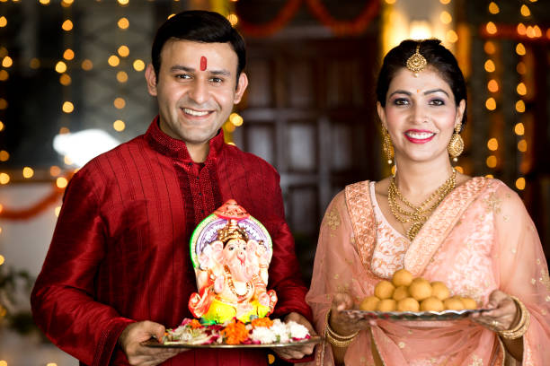
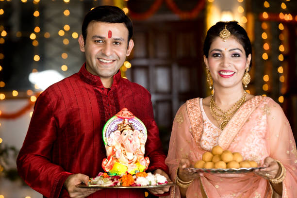
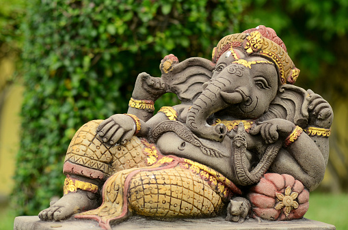
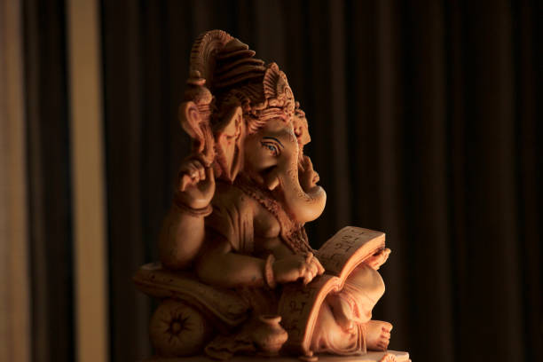
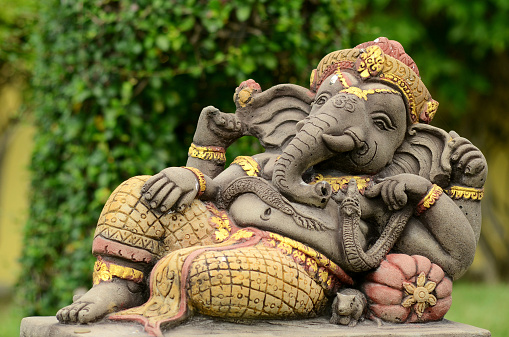
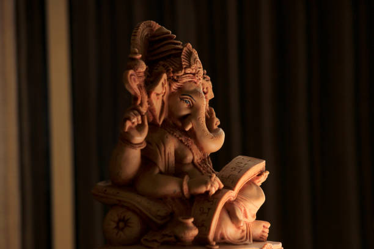

Ganesha es un dios del panteón hindú con cuerpo humano y cabeza de elefante, hijo de los dioses Shiva y Parvati. Es una de las deidades más conocidas y adoradas en la India, por ser removedor de obstáculos, patrono de las artes, de las ciencias y señor de la abundancia. Se lo invoca también como patrono de las escrituras durante la lectura de textos sagrados.
Su nombre significa "señor" (isa) de los gana, grupo de seres semidivinos que forman parte del séquito de su padre. También se lo conoce como Ganapati ("soberano de los gana"), Vighnesa "señor [que remueve] obstáculos" y Vinayaka "señor que remueve [obstáculos]".
¿Qué se le pide a Ganesha?
Ganesha le agradan mucho las esencias dulces y el color colorado, en tanto que representa el fuego espiritual. Entonces, si querés ofrecerle algo en tu altar personal, lo mejor es que logres inciensos dulces, frutas o bien flores rojas.Ganesha es el maestro indicado para invocar en cualquier nueva etapa o proyecto, para atraer la abundancia y alejar cualquier obstáculo; y también para proteger tu hogar de energías negativas.Puedes colocar una estatua de Ganesha en tu hogar en un sector o ubicación propicia de tu hogar para disolver obstáculos, ofrecer protección y ayudarte con tu desarrollo personal y espiritual. Los adoradores de Ganesha crean un altar y le presentan ofrendas, como un tazón de arroz.La ubicación más ideal es en una sala de meditación en el sector noreste de tu hogar.

 

 


